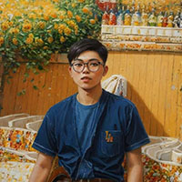

Jingyao Gong
|  |
*Anonymization of Public Information |
Biography
Arrived on Earth at the end of 2000, born in Jiangsu Province, the great motherland. (2018-2022) Undergraduate studies in Software Engineering, (2022-2025) Master's research in Artificial Intelligence, loving various sciences, enjoying it, and fond of thinking. Dislikes public online social interactions, unwilling to disclose any identity information or contact details. Obsessed with neural networks, in 2025 became a novice Algorithm Engineer, attempting to unravel the mysteries of AI, dedicated to achieving closed-loop super artificial intelligence, and opposes open-loop GPT-AI!
Research
Computer Vision: Image Classification, Few-shot Learning, Low-Level Visual, etc.
Natural Language Processing: Sentiment Understanding, Text Classification, Generative Language Models, etc.
Multimodal: Vision-Language Models, Image Generation, etc.
Closed-Loop Intelligence: etc.
C/C++, Java, C#, JavaScript, Python, Golang, Spring, Mybatis, JPA, Junit, Flask, Django, .Net, Naive
Cloud, Dubbo, Kafka, RabbitMQ, Redis, Nginx, Tomcat, MySQL, Transaction Isolation Mechanism, Redis,
HTML, CSS, JS, Vue, React, Bootstrap, Layui, Android Native Development, Fragment Lifecycle, Network
Communication, WeChat Mini Program, Cloud Storage, Database, Git Collaboration Development, Docker, K8S,
U3D, Torch, Tensorflow, GAI, Computer Vision, CNN, RNN, GCN, LSTM, DDPM, Transformer, Compression and
Recovery, Super-Resolution, YOLO Detection, SD Image Generation, GAN Generative Adversarial Network,
VAE, VQ-VAE/GAN, VAR, MLLM, LoRA, Reinforcement Learning, RLHF, DPO, PPO, Ollama, Vllm, Fastgpt, Dify,
Llama-Factory, Firefly, etc...
News
Others +∞, Selected listed
2025 - 1 paper accepted to CVPR 2025 (*hoping)
2024 - National Scholarship for Graduate Students (Top 1üèÜ)
2024 - First Prize Scholarship for Master's Students (×2 Times)
2024 - Kaggle Competitions: Enefit - Predict Energy Behavior of Prosumers (üîò Silver)
2024 - 1 paper accepted to AAAI 2024
2023 - "Huawei Cup" National Postgraduate Mathematical Contest in Modeling (ü•à Prize)
2023 - DF Visual Coding Competition (Global Teams TOP 1üèÜ)
2023 - Kaggle Competitions: ICR - Identifying Age-Related Conditions (üîò Silver)
2023 - Jiangsu Graduate Mathematical Modeling Competition (ü•á Prize)
2023 - 2 paper accepted to sci, 1 patent, 2 software copyright registrations.
2022 - National Scholarship for University Students
2022 - Kaggle Competitions: Optiver Realized Volatility Prediction (üü† Bronze)
2021 - Postgraduate Admission through Recommendation (Rank TOP 1üèÜ)
2021 - 3 software copyright registrations
2021 - First Prize Scholarship for College Students (×3 Times)
2021 - Winner of the Internet+ College Students Competition
2021 - National Lanqiao Cup Algorithm Competition (ü•á Prize)
2020 - National Undergraduate Mathematics Competition (ü•à Prize)
2019 - Jiangsu Undergraduate Mathematics Competition (ü•á Prize)
Work BG
-
Intern in B
2023/12~2024/10: Alignment of Language Models, Retrieval-Augmented Generation, Full-Stack Development.
-
Intern in A
2021/10~2022/01: Android Development, Java Backend Development, C++ Development.
Projects
-
launched two Android applications, developed games with Unity3D, created a literature database, campus promotion software, written algorithms, image processing systems, recommendation algorithms, multimodal generative projects, working on a controllable diffusion model, etc...